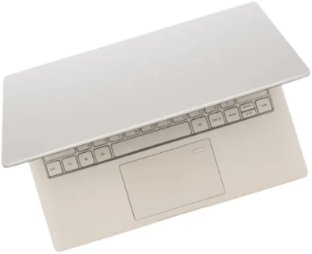
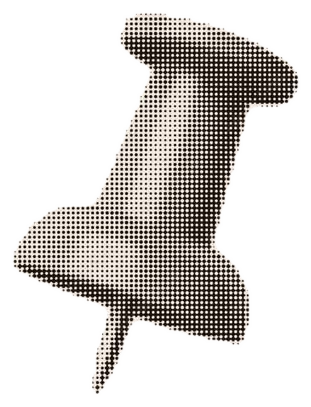
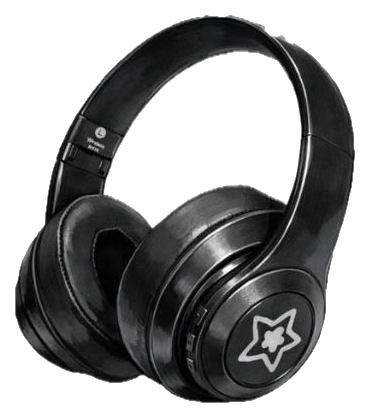
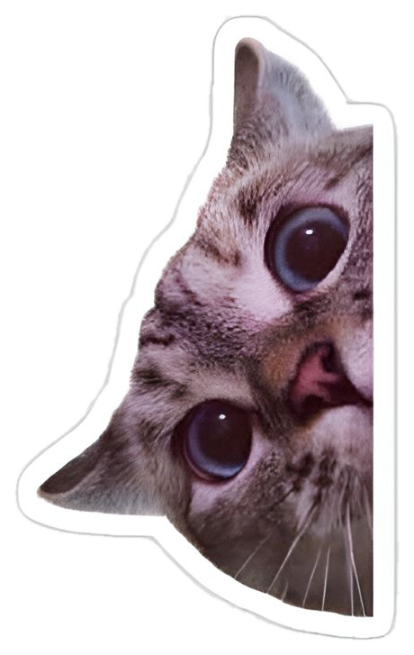
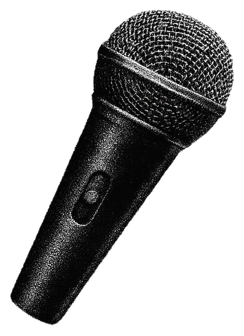
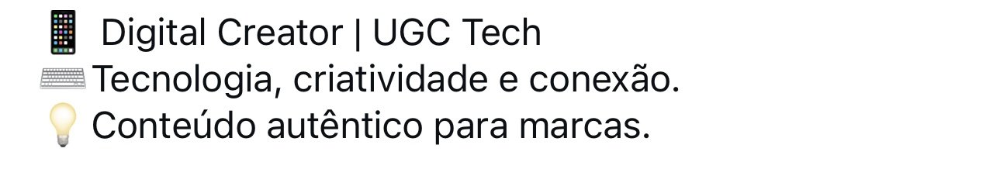
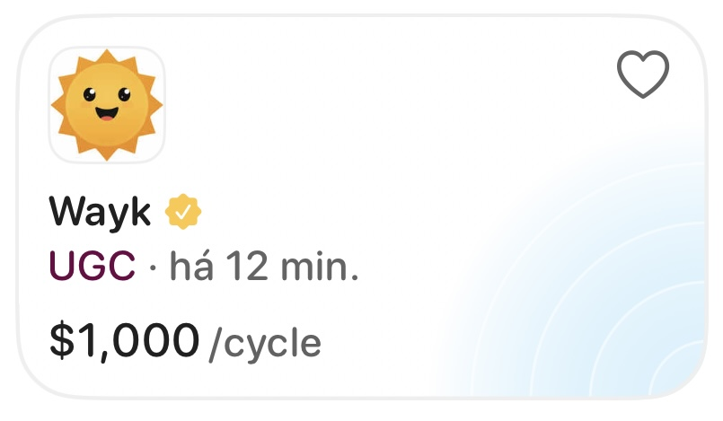
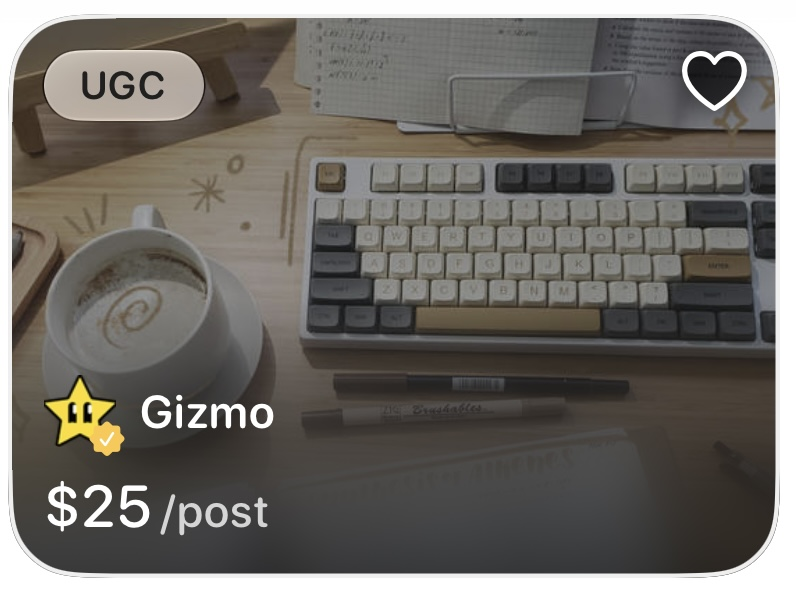
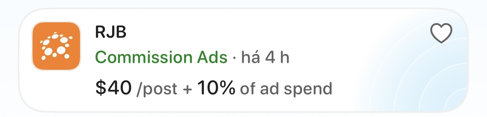

UGC TECH
DO ZERO
Do primeiro cadastro às campanhas internacionais


Do primeiro cadastro às campanhas internacionais
Um guia prático para mulheres brasileiras que desejam criar conteúdo para aplicativos, plataformas e ferramentas digitais — mesmo começando do zero e sem falar inglês.
por Luana
Se você chegou até aqui, provavelmente já ouviu falar sobre UGC, criação de conteúdo ou oportunidades de trabalhar com marcas pela internet.
Talvez tenha visto alguém gravando vídeos para aplicativos, mostrando como utiliza uma ferramenta digital ou recebendo oportunidades de empresas de outros países. E talvez tenha pensado: será que eu também consigo?
A resposta é que você pode aprender e começar a construir seu espaço nesse mercado. Não precisa ter milhares de seguidores, equipamentos caros ou experiência profissional para dar os primeiros passos.
O UGC Tech é uma área que permite trabalhar com a criação de conteúdos para empresas que desenvolvem aplicativos, plataformas, softwares e ferramentas digitais.
Neste guia, você vai aprender como funciona esse mercado, como preparar seus primeiros vídeos, como montar um portfólio, onde procurar campanhas e como se candidatar a oportunidades nacionais e internacionais.
Também vamos falar sobre remuneração, formatos de vídeos, contratos e direitos de uso, porque conhecer esses detalhes é tão importante quanto saber gravar.
trabalhar com UGC não significa receber dinheiro automaticamente. As oportunidades dependem das campanhas disponíveis, da seleção das empresas, da qualidade das entregas e das condições de cada contrato. Este material foi criado para ajudar você a se preparar e tomar decisões mais conscientes.
Vamos começar?
UGC é a sigla para User Generated Content, expressão em inglês que significa conteúdo gerado por usuários.
No mercado de criação de conteúdo, UGC é um formato em que uma pessoa produz vídeos, fotos ou outros materiais que as empresas podem utilizar para apresentar seus produtos e serviços.
Quando falamos em UGC Tech, estamos falando de conteúdo voltado para o universo da tecnologia e dos produtos digitais.

Imagine que uma empresa desenvolveu um aplicativo para ajudar pessoas a aprender outro idioma.
Ela pode contratar uma criadora UGC para gravar um vídeo mostrando como o aplicativo funciona, apresentar uma funcionalidade, contar sua experiência ou demonstrar como a ferramenta pode ser utilizada no dia a dia.
Esse conteúdo poderá ser utilizado pela empresa em suas redes sociais, campanhas de divulgação ou anúncios, conforme o que foi acordado.
É isso que torna o UGC Tech uma oportunidade interessante para quem gosta de tecnologia, aplicativos e comunicação.
As empresas precisam apresentar seus produtos de maneira clara e interessante. No caso de aplicativos e ferramentas digitais, muitas vezes é necessário mostrar a experiência de uso, explicar funcionalidades e demonstrar como determinada solução pode ajudar uma pessoa.
É aí que entra a criadora UGC Tech.
Ela pode ser contratada para:
Uma empresa desenvolve um aplicativo de inteligência artificial para organização de tarefas.
A marca pode solicitar um vídeo mostrando:
A criadora não precisa desenvolver o aplicativo. Seu trabalho é produzir o conteúdo solicitado, respeitando o briefing e as regras da campanha.
Embora tenham pontos em comum, essas três atividades não são exatamente iguais.
Envolve a criação de conteúdo para produtos e serviços de diferentes segmentos, como beleza, moda, alimentação, decoração e cuidados pessoais.
É voltado para aplicativos, plataformas, softwares e ferramentas digitais. O conteúdo costuma envolver gravações de tela, demonstrações, tutoriais e apresentações de funcionalidades.
O influenciador geralmente é contratado também pelo alcance e pela audiência que construiu em seus próprios canais. A divulgação acontece para os seguidores do perfil.

uma criadora UGC pode produzir conteúdo para uma marca sem precisar ter uma audiência grande. Isso não significa que seguidores nunca sejam considerados. Algumas campanhas exigem publicação no perfil da criadora ou estabelecem critérios específicos de alcance.
O que importa é entender exatamente o que a empresa está contratando.
Sim. Você pode começar sem ter um portfólio profissional, sem uma grande audiência e sem experiência anterior.
Mas começar do zero não significa pular etapas.
Antes de se candidatar às campanhas, é importante aprender a produzir vídeos, conhecer os formatos mais utilizados, organizar seus materiais e demonstrar que consegue seguir orientações.
Você pode começar criando vídeos demonstrativos com aplicativos que já utiliza. Por exemplo:
Esses conteúdos podem servir como amostras para seu portfólio. Identifique os vídeos como projetos demonstrativos, principalmente quando não forem trabalhos contratados por uma empresa. Não apresente uma demonstração como se fosse uma campanha oficial.
Você não precisa ser perfeita no primeiro vídeo. Precisa estar disposta a aprender, praticar e melhorar.
Uma das vantagens de começar no UGC Tech é que você pode utilizar equipamentos que já possui.
É o principal equipamento para gravar vídeos, capturar a tela de aplicativos e editar conteúdos.
Não é obrigatório ter o celular mais caro. O importante é conhecer os recursos do aparelho e gravar com boa qualidade.
Ajuda a manter o celular firme e permite gravar com as mãos livres.
A luz natural próxima a uma janela pode funcionar muito bem. Um ring light também pode ajudar quando a iluminação do ambiente não é suficiente.

Pode ajudar na gravação e na conferência do áudio.
Vídeos ocupam espaço. Organize seus arquivos e faça cópias de segurança.
Comece com o que tem. Invista em equipamentos melhores quando entender suas necessidades e tiver condições de fazer isso.

O ambiente influencia a percepção de qualidade do vídeo.
Você não precisa ter um escritório bonito ou uma casa totalmente decorada. Precisa de um espaço organizado, com iluminação adequada e poucos elementos que distraiam.
Quando precisar gravar a tela, verifique se aparecem mensagens, nomes, números, e-mails ou informações pessoais.
Utilize contas de demonstração quando possível e não exponha dados privados.
A qualidade de um vídeo não depende apenas da câmera. Enquadramento, iluminação, áudio, ritmo e clareza fazem muita diferença.
Para vídeos em que você aparece falando, posicione o celular na vertical e deixe um pequeno espaço acima da cabeça.
Evite cortar partes importantes do rosto ou deixar a câmera muito abaixo do queixo.
Procure gravar de frente para uma janela ou utilize uma fonte de luz posicionada à sua frente.

Fale com clareza e evite ambientes com televisão, ventilador ou conversas ao fundo.
Não é necessário decorar um texto inteiro. Entenda a mensagem que precisa transmitir e fale como se estivesse explicando algo para outra pessoa.
Nos vídeos de UGC Tech, a gravação de tela é muito importante.
Antes de gravar:
Dica: grave pequenos trechos em vez de tentar fazer tudo perfeitamente em uma única tomada.
Este é um dos capítulos mais importantes para quem deseja trabalhar com UGC Tech.
As empresas podem utilizar nomes diferentes para formatos semelhantes. Por isso, conhecer os termos mais comuns ajuda você a interpretar briefings e entender o que precisa entregar.
Também chamado de Face-to-Camera.
É o formato em que a criadora aparece falando diretamente para a câmera.
Exemplo: explicar como um aplicativo ajudou a organizar sua rotina.
É bastante utilizado para apresentações, opiniões, explicações e anúncios.
A criadora aparece falando e a gravação da tela do aplicativo é inserida durante o vídeo.
Exemplo:
É um formato especialmente útil para aplicativos e ferramentas digitais.
É a gravação direta da tela do celular ou computador.
A criadora pode mostrar como acessar uma função, criar uma conta, utilizar uma ferramenta ou realizar uma atividade.
Pode ser acompanhado por narração, textos na tela ou música, dependendo do briefing.
É a narração em voz sobre as imagens.
Você grava a tela do aplicativo ou imagens de apoio e depois adiciona sua voz explicando o que está acontecendo.
Exemplo: mostrar como utilizar uma ferramenta de inteligência artificial enquanto explica cada etapa.
A tela é dividida para mostrar a criadora e o aplicativo ao mesmo tempo.
É comum aparecer o rosto em uma parte da tela e a demonstração do aplicativo na outra.
Também pode ser chamado de Split Screen.
A criadora aparece na frente de uma imagem, vídeo ou captura de tela utilizada como fundo.
Pode ser usado para comentar uma funcionalidade, apresentar uma novidade ou explicar algo que aparece na tela.
É um vídeo de reação.
A criadora reage a uma funcionalidade, demonstração, situação ou conteúdo relacionado ao aplicativo.
A reação precisa ser natural e estar de acordo com a proposta da campanha.
É uma encenação curta.
A criadora representa uma situação cotidiana para apresentar um problema e mostrar como o aplicativo pode ajudar.
Exemplo: uma pessoa tentando organizar várias tarefas e ficando confusa, até descobrir uma ferramenta de organização.
É um passo a passo que ensina como utilizar uma ferramenta.
Pode incluir:
O objetivo é ensinar de forma simples e visual.
É uma demonstração do produto digital.
A criadora apresenta as principais funcionalidades e mostra como elas funcionam na prática.
É importante não afirmar que o aplicativo possui recursos que não foram demonstrados ou confirmados.
É um conteúdo no estilo “um dia na minha vida”.
A ferramenta aparece inserida em uma situação real da rotina.
Exemplo: mostrar como você utiliza um aplicativo de organização durante seu dia.
É o formato de problema e solução.
Primeiro, apresenta-se uma dificuldade. Depois, o aplicativo é apresentado como uma ferramenta que pode ajudar a resolver aquela situação.
Exemplo:
É um vídeo de comparação.
Pode mostrar duas formas de realizar uma tarefa, comparar funcionalidades ou apresentar diferenças entre ferramentas.
As comparações devem ser honestas e baseadas em informações verificáveis.
O nome correto é Carousel, ou carrossel.
É uma sequência de cards ou slides que a pessoa desliza para visualizar no Instagram ou em outra plataforma.
Pode conter:
Atenção: carrossel não é necessariamente um vídeo falado. Se a empresa solicitar um Talking Head, ela está pedindo um vídeo com a criadora falando para a câmera. Se solicitar um Carousel, normalmente está pedindo uma sequência de cards.
É um conteúdo criado com finalidade publicitária.
Pode utilizar qualquer um dos formatos anteriores, mas é pensado para apresentar uma oferta, despertar interesse ou incentivar uma ação.
A empresa pode solicitar versões diferentes para testar qual abordagem funciona melhor.
Uma campanha pode pedir:
Isso não significa necessariamente sete vídeos diferentes. É preciso interpretar cada item do briefing e confirmar a quantidade de arquivos finais.
Um bom roteiro ajuda a organizar a mensagem e manter a atenção de quem assiste.
Uma estrutura simples é:
É a primeira frase ou imagem do vídeo. Serve para despertar curiosidade.
Exemplos:
Explique a situação que levou você a apresentar a ferramenta.
Mostre o aplicativo funcionando. Não fique apenas falando sobre ele.
Explique o que a ferramenta pode facilitar, considerando o que você realmente testou.
É a orientação final para quem está assistindo.
Exemplos:
Cena 1 — Hook
“Eu sempre esquecia alguma tarefa importante durante o dia.”
Cena 2 — Problema
“Às vezes, eu anotava em vários lugares e depois não encontrava nada.”
Cena 3 — Demonstração
“Comecei a testar esse aplicativo para reunir minhas tarefas em um só lugar.”
Cena 4 — Benefício
“Assim, consigo visualizar melhor o que preciso fazer.”
Cena 5 — CTA
“Se você também gosta de manter tudo organizado, vale a pena conhecer.”
O roteiro é um exemplo. Só utilize afirmações que correspondam à experiência real e às funcionalidades do aplicativo.
Você não precisa dominar dezenas de ferramentas. Algumas já ajudam bastante no início.
Para edição de vídeos, cortes, legendas, efeitos e ajustes de áudio.
Para criar capas, apresentações, portfólios, cards e materiais visuais.
Outra opção para editar vídeos no celular.
Para organizar e compartilhar vídeos, documentos e arquivos com empresas.
Para escrever roteiros, organizar briefings e acompanhar entregas.
Tradutores podem ajudar a compreender briefings e mensagens em inglês.
Você também pode utilizar ferramentas de inteligência artificial para revisar textos, organizar ideias e praticar respostas.
sempre revise as traduções. Termos de contrato, pagamento e direitos de uso precisam ser compreendidos corretamente. Não aceite uma obrigação que você não entendeu.
O Instagram pode funcionar como uma vitrine do seu trabalho.
Mesmo que você encontre campanhas em plataformas externas, ter um perfil organizado ajuda a apresentar sua identidade como criadora.
Escolha uma foto nítida, com boa iluminação e aparência profissional.
Você pode utilizar seu nome e uma identificação relacionada ao UGC Tech.
Exemplo:
Luana | UGC Tech Creator

A bio deve explicar rapidamente o que você faz.
Exemplo:
“Crio conteúdos para apps e ferramentas digitais.
UGC Tech | Vídeos criativos para marcas.
Brasil • Oportunidades internacionais.”

Não é necessário transformar o perfil em um diário pessoal. Pense nele como uma apresentação profissional.
O portfólio é uma apresentação dos seus trabalhos e das suas habilidades.
Ele permite que uma empresa veja como você grava, apresenta ferramentas e organiza conteúdos.
Você pode montar o primeiro portfólio mesmo sem ter recebido por uma campanha.
Para começar, procure apresentar de quatro a seis exemplos bem executados, em vez de colocar muitos vídeos sem organização.
Uma sugestão:
1 Talking Head.
1 Screen Recording.
1 Tutorial.
1 Talking Head + Screen Recording.
1 Voice-over.
1 vídeo de demonstração de aplicativo.
Você pode criar seu portfólio no Canva e compartilhar por link ou PDF.
Organize os vídeos de maneira que a empresa consiga assistir sem dificuldade.
Não coloque informações falsas, campanhas que não realizou ou depoimentos que não recebeu.
Existem plataformas que conectam criadores e empresas interessadas em conteúdo.
Algumas podem oferecer oportunidades internacionais, mas a disponibilidade de campanhas depende do país, do perfil, da categoria e das regras de cada plataforma.
Plataforma relacionada a oportunidades de criação de conteúdo para marcas.
Site: https://fluencify.io/
Uma das minhas favoritas para quem quer começar no UGC Tech! Tem diversas campanhas remuneradas, paga em dólar e oferece diferentes valores por vídeo. Os pagamentos são mensais e pode ser uma ótima fonte de renda para criadores.
Site: https://sideshift.app/
Plataforma voltada a conectar criadores e oportunidades de conteúdo.
Plataforma com diversas campanhas para criadores de conteúdo e oportunidades remuneradas no UGC. Você encontra marcas de diferentes segmentos e campanhas com cachês variados e o pagamento é em dólar.
Site: https://influee.co/
Plataforma com diversas campanhas para criadores de conteúdo, principalmente oportunidades remuneradas. Os valores costumam ser muito bons, mas é necessário ter CNPJ para participar. Pagamento em 60 dias.
Site: https://mis-app.com/
Plataforma com campanhas remuneradas para criadores de conteúdo, com foco em marcas e experiências.
Site: https://noovid.com/pt-br
Plataforma com diversas campanhas remuneradas, principalmente no nicho de tecnologia (UGC Tech). Tem oportunidades com cachês menores e maiores, mas atenção: o prazo de pagamento é de até 120 dias.
Site: https://appconty.com/pt
É uma plataforma de recrutamento de criadores de conteúdo focada em vídeos curtos para divulgação de aplicativos no TikTok e no Instagram.
Confira as regras atuais no site oficial de cada plataforma.
Essas plataformas podem ter critérios de acesso, disponibilidade geográfica, requisitos de cadastro e formas de pagamento diferentes.
Antes de investir tempo em um cadastro, verifique se aceitam criadores residentes no Brasil e se oferecem campanhas compatíveis com seu perfil.
Atenção: a existência de uma plataforma não significa que haverá campanhas disponíveis para todas as pessoas. Verifique as regras diretamente nos canais oficiais, pois elas podem mudar.
Cada plataforma possui um processo próprio, mas algumas etapas são comuns.
Confira se está no endereço correto. Evite links enviados por desconhecidos.
Algumas plataformas possuem opções separadas para marcas e criadores.
Preencha as informações solicitadas com atenção.
Inclua uma descrição clara sobre os conteúdos que produz.
Algumas plataformas solicitam conexão com Instagram ou TikTok. Confira quais permissões estão sendo solicitadas.
Inclua seus vídeos e exemplos de trabalho.
Confira as informações antes de enviar.
Não forneça sua senha do Instagram ou TikTok para uma pessoa que se apresenta como recrutadora.
Quando uma plataforma solicitar conexão com uma rede social, verifique se o processo acontece por uma autorização oficial e quais permissões estão sendo concedidas.
Depois de concluir o cadastro, você poderá encontrar oportunidades disponíveis, quando houver.
Antes de se candidatar, leia a campanha inteira.
Uma remuneração aparentemente alta pode vir acompanhada de muitas entregas ou de direitos de uso muito amplos.
Compare o trabalho solicitado com o pagamento e o tempo necessário para produzir.
A candidatura é o momento em que você apresenta por que acredita que pode realizar aquela campanha.
Evite enviar uma mensagem genérica para todas as empresas.
Leia o briefing e destaque como seu estilo de criação combina com a proposta.
“Olá! Tenho interesse em participar desta campanha. Trabalho com criação de conteúdo UGC Tech e gosto de produzir vídeos que apresentam aplicativos e ferramentas digitais de maneira clara e natural. Acredito que posso contribuir com uma demonstração objetiva e alinhada à proposta da campanha. Obrigada pela oportunidade!”
“Hello! I’m interested in participating in this campaign. I create UGC Tech content focused on apps and digital tools. I enjoy producing clear and natural videos that show how digital products work. I would love to contribute to this campaign. Thank you for the opportunity!”
Não falar inglês fluentemente pode dificultar algumas etapas, mas não significa que você não possa começar a buscar oportunidades internacionais.
Muitas etapas podem ser apoiadas por ferramentas de tradução.
Para entender briefings: copie o texto e solicite uma tradução organizada.
Para responder candidaturas: escreva sua resposta em português, traduza e revise antes de enviar.
Para compreender vídeos de referência: utilize legendas ou transcrição quando disponíveis.
Para gravar em inglês: pratique frases curtas e leia o roteiro em voz alta antes de gravar.
Algumas campanhas exigem inglês falado, pronúncia específica ou comunicação direta com a equipe internacional.
Não se candidate supondo que todas aceitarão conteúdo em português.
Confira o idioma solicitado e não esconda suas limitações quando elas forem relevantes para a entrega.
Você pode começar por campanhas que aceitam conteúdo em português ou que não exigem fala em inglês e, aos poucos, ampliar suas possibilidades.
Entender como você será paga é essencial antes de aceitar uma campanha.
As empresas podem trabalhar com diferentes modelos de remuneração. Os nomes abaixo são comuns no mercado, mas cada plataforma pode utilizar regras próprias.
É um valor combinado pela entrega do conteúdo.
Exemplo:
A empresa solicita um vídeo e oferece US$ 100 pelo trabalho.
Se o contrato estabelece um pagamento fixo pela entrega, o valor não depende diretamente da quantidade de visualizações do vídeo.
É importante confirmar quantos vídeos estão incluídos, quais revisões são permitidas e quais direitos de uso estão sendo contratados.



CPM significa custo por mil impressões ou visualizações, conforme a métrica definida pela campanha.
Nesse modelo, a remuneração é calculada com base em uma quantidade de mil unidades da métrica válida.
Exemplo didático:
Atenção: cada campanha pode definir o que considera visualização válida. Pode haver limite de pagamento, período de apuração, países elegíveis e outras regras.
Não presuma que toda visualização será remunerada.

É um modelo híbrido.
A criadora recebe um valor fixo pela entrega e pode receber um adicional calculado pelo desempenho do conteúdo.
Exemplo:
O valor variável depende das regras da campanha e da apuração das métricas.

Nesse modelo, existe um pagamento fixo pela entrega e uma comissão por vendas ou ações atribuídas ao conteúdo.
Exemplo:
É necessário saber como a empresa identifica as vendas, qual período considera e quando libera o pagamento.
A remuneração depende das vendas ou ações atribuídas à sua divulgação.
Nesse modelo, pode não existir pagamento fixo pela produção.
Antes de aceitar, avalie o risco: você pode produzir o conteúdo e não receber comissão se não houver vendas elegíveis.
A empresa pode utilizar o conteúdo em anúncios pagos e oferecer uma comissão sobre vendas atribuídas.
É fundamental separar duas coisas:
Uma autorização para utilizar seu vídeo em anúncios não significa que você receberá comissão automaticamente.
Confirme se existe pagamento fixo, comissão ou ambos.

[QUADRO COMPARATIVO PENDENTE DA CLIENTE]
Espaço reservado para o quadro comparativo dos modelos de remuneração
Não avalie uma campanha apenas pelo valor anunciado. Considere também a quantidade de entregas, o prazo, os direitos de uso e o risco de remuneração variável.
O briefing é o documento ou conjunto de orientações enviado pela empresa.
Ele explica o que precisa aparecer no conteúdo e quais regras devem ser seguidas.
Se algo no briefing estiver confuso, pergunte antes de gravar. Isso pode evitar retrabalho.
Uma das partes mais importantes do trabalho profissional é entender o que você está autorizando a empresa a fazer com seu conteúdo.
A empresa pode solicitar autorização para utilizar seu vídeo em:
Confira onde o conteúdo poderá ser utilizado.
O contrato pode autorizar o uso por 30 dias, 90 dias, seis meses, um ano ou outro período.
Quanto maior o prazo e a abrangência, maior a importância de avaliar as condições comerciais.
Quando a empresa solicita autorização para utilizar seu conteúdo em anúncios, confirme:
Algumas campanhas solicitam um código de parceria para permitir que a marca utilize determinado conteúdo em anúncios por meio da plataforma social correspondente.
Isso não é necessariamente o mesmo que entregar a senha da sua conta.
Confira a autorização solicitada e não compartilhe suas credenciais.
É o material bruto, sem a edição final.
Se a empresa solicitar os arquivos originais, verifique se essa entrega está incluída no pagamento.
Alguns contratos podem impedir que você trabalhe com concorrentes durante determinado período.
Leia essa condição com atenção.
Se houver valores elevados, exclusividade ampla, cessão extensa de direitos ou obrigações que você não entenda, considere buscar orientação jurídica antes de assinar.
Algumas campanhas internacionais remuneram criadores em dólar ou em outra moeda.
O método de pagamento depende da plataforma e da empresa.
Imagine que uma campanha pague US$ 100.
O valor recebido em reais dependerá da cotação utilizada, das tarifas e de eventuais impostos aplicáveis.
Não considere o valor em dólar como se fosse exatamente o valor que cairá na sua conta em reais.
Guarde:
Verifique suas obrigações fiscais no Brasil de acordo com sua situação e a natureza do serviço prestado.
Depois dos primeiros vídeos, o próximo passo é desenvolver consistência e qualidade.
Não dependa de uma única plataforma ou de uma única campanha.
Atualize seus exemplos conforme desenvolver novas habilidades.
Pratique Talking Head, Screen Recording, Voice-over, Tutorial e outros formatos.
Veja como empresas apresentam aplicativos e ferramentas digitais.
Observe:
Use essas referências para aprender, sem copiar integralmente o trabalho de outras pessoas.
Aprenda a explicar funcionalidades de forma simples. Uma boa criadora não precisa utilizar palavras difíceis para parecer profissional.
Crie pastas para:
Cumprir prazos, responder com clareza e entregar o que foi solicitado são atitudes que ajudam a construir relações profissionais.
Este plano é uma sugestão de organização para quem está começando. Você pode adaptar os dias à sua rotina.
Lembre-se: o objetivo dos 30 dias é construir uma base profissional. A aprovação em campanhas e a conquista de pagamentos não são garantidas por esse cronograma.
“UGC Tech Creator | Apps e ferramentas digitais.
Crio vídeos naturais e criativos para marcas.
Brasil • Conteúdo para o mercado digital.”
“Olá! Sou criadora de conteúdo UGC Tech e gosto de apresentar aplicativos, plataformas e ferramentas digitais de maneira simples e natural.
Meu foco é produzir vídeos que demonstrem funcionalidades e ajudem o público a entender como os produtos digitais podem ser utilizados no dia a dia.
Estou sempre buscando desenvolver minhas habilidades e criar conteúdos alinhados às necessidades de cada marca.”
“Olá! Tenho interesse em participar desta campanha. Gostei da proposta e acredito que posso contribuir com um conteúdo claro, criativo e alinhado ao objetivo da marca. Trabalho com vídeos de aplicativos e ferramentas digitais e ficaria feliz em fazer parte desta oportunidade. Obrigada!”
“Hello! I’m interested in participating in this campaign. I like the concept and believe I can create clear, creative content aligned with the brand’s goals. I create videos focused on apps and digital tools, and I would be happy to be part of this opportunity. Thank you!”
Português:
“Olá! Poderiam me confirmar como funciona a remuneração desta campanha? Gostaria de entender se o pagamento é fixo, baseado em CPM ou se existe alguma comissão por resultados. Também gostaria de confirmar o prazo e o método de pagamento. Obrigada!”
Inglês:
“Hello! Could you please clarify how payment works for this campaign? I would like to know if the compensation is a fixed fee, CPM-based, or includes a commission. I would also appreciate confirmation of the payment timeline and method. Thank you!”
Português:
“Antes de confirmar minha participação, gostaria de entender melhor os direitos de uso do conteúdo. Por quanto tempo a marca poderá utilizar o vídeo e em quais canais? A autorização inclui anúncios pagos?”
Inglês:
“Before confirming my participation, I would like to better understand the content usage rights. How long can the brand use the video, and on which platforms? Does the authorization include paid ads?”